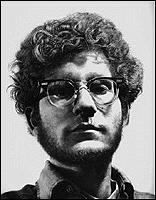

|
20th-Century Art | |
|
(c) |
Chuck Close |
|
See examples of late 20th-century trends in European and
American art. Included are paintings by Max Beckman, Georgia
O'Keefe, Joan Miro, Grace Hartigan, and Chuck Close. | |